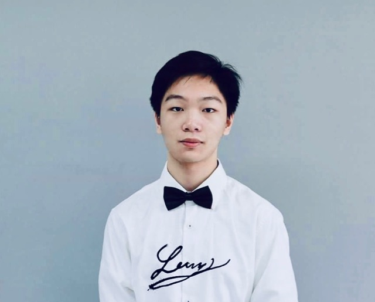

My name is Thanh Long Nguyen, call me Long for short. I am 18 years old who currently studies at RMIT University as a freshman in Bachelor of Information Technology with an ID is s3699180. You can contact me through the email address thanhlong2000@gmail.com.
A bit about myself, I am Vietnamese who loves to experience and try different foods and cuisines, for example, Italian, Chinese, American and explicitly Korean. Additionally, I also adore animals, my family owns a British Shorthair cat back in Vietnam, and there are no words to describe how wonderful he is. All have been noted, I'm also into badminton lately xD.
- To be honest, I haven’t found any interest in this field, I remember the first time I had ICT as a subject in my high school (before then I don’t know anything about it). My teacher taught me about HTML code, Microsoft excel and word, it was like a whole new world for me to know about computers and technology at that age. When I was taking the ICT class, I think I have a talent at this field when everyone was failing it due to the heavy assignments and the complexity of the code that they have to deal with. However, I was super surprised by how easy I could comprehend the lessons; as a result, I got all As in my ICT exams. Since then, I start to wonder if I have a talent in this field or not, that's the reason why I chose IT in university so that I can discover more about myself and my future career. In particular, I don't have a typical person to look up to in this IT field yet, all I know is some super celebrities that everybody knows like Bill Gates and Steve Jobs. With this in mind, I'm still looking for a specialized IT interest, and for now, I'm just focusing on coding JavaScript and Python.
- Since I was young, I always want to study overseas and explore different cultures and people. With this intention, I was looking for the best place that I can settle and only concentrate on the discovery of my hidden talent and personalities without any disruptions. Therefore, Melbourne is the best fit for me since it is the top 1 liveable city in the world, where I can enjoy myself and do whatever I want peacefully. Then it comes to choosing the right university; it is pretty narrowed down as RMIT is one of the best universities for Information Technology and developing software. As the result, I chose RMIT because I think RMIT is the right place for me to study IT.
- For now, I am just a freshman, so I don't really know what to expect much. However, I do want to learn about programming languages, and I think during the first few weeks in bachelor, I have a spark in coding and developing applications and software; hence, I'm happily looking forward to this course, to learn more about technologies and the ways people can use this to help others and be a part of the modern world.
- As I mentioned, I'm still looking for my interest, but currently, I have a spark of developing software and writing codes through many programming languages especially Java. So that's the reason why I want to become a software developer specialized in Java for now. Therefore, the job provided by Tramanda Company would be fitted the most for me as they are offering a developer position which is very appealing to me.
- To be eligible for the position, I must have a bachelor's degree in Computer Science or other related fields which means a bachelor's degree in Information Technology would be fine. Since I don't have any intention to quit this IT course, so I hope I will be able to receive a degree within 3 years. Additionally, I am required to have a minimum of 4 years of experience in Java commercial and some extensive knowledge about Java, SQL, Spring, Hibernate, etc. The company also asks the candidates to have a range of experiences, for example, designing and developing web applications with a strong understanding of web and object-oriented principles and design patterns. Lastly, I am recommended to have strong speaking and writing communication skills.
- The software developer is the job targeted explicitly for the one who graduated the bachelor of IT or Computer Science and has lots of experience in developing and designing software. As a freshman, I legitly haven't met those requirements yet. The only qualifications I have is High school "degree" and an Ielts scored 6.5+. About skills, I do have oral and written communication skills but not as strong as the company required. Additionally, for my experience, I do know how to operate the computer, and how to code primary and simple codes in Java and Python as I still learning it in Introduction of Programming course.
- My main objective right now is to graduate bachelor of IT, so I can obtain a good knowledge of programming and developing software which is the primary requirement for my ideal job. To improve my experience, I would want to get an internship during the break of the first year; therefore, I can work in some companies to gain skills in designing web applications and also to study Spring and other modern Open Source Java frameworks. According to the requirement, it says that travel industry or accounting related software experience is highly desirable, that will be my motivation to get an associate degree in accounting, so I can increase the change to get employed. Besides, during the studies, I will spend some of my free times to go in-depth in JavaScript and SQL.
- Result of an online Myers-Briggs test:
- Result of an online learning style test:
- Result in Big Five personality test:
- First of all, these tests are pretty accurate for me, I considered myself as a shy and introvert person. After taking the test, it is correct to say that I prefer a simple, quiet life, instead of seeking attention from society. Additionally, I am also pretty secured and sensitive; I will get anxiety and shame toward criticism and conflict which creates a cover image to keep myself from truly open up to people, even to friends that I have known for years. I don't readily to share my thoughts and feelings unless I feel comfortable with the person that I am sharing with, so it will take times to get to know me. On the other hand, according to the tests, I am determined and passionate when it comes to something that I love, I will gladly dedicate myself for a whole day to just focusing on my goals, for example, assignments, projects and even researches which all of these are presented by my conscientiousness score 56%. Furthermore, I can see that I am a visual learner which I learn by reading and seeing pictures rather than listen to people teaching, I study best in an environment that I am alone with my laptop and books for research that I like to see what I am learning. But it doesn't mean that I hate study with people, I do love to communicate with friends and study with them as long as they are friendly and open-minded because I will not be the one who initiative the conversation xD. Last but not least, If I can find true friends that I feel safe around them, I will be very loyal and supportive.
- Well, obviously I will be the quiet one in the group. But since I am very determined and passionate about what I am doing, I will dedicatedly finish all the tasks that are given to me. Correspondingly, I have agreeableness characteristic which means I will put other's needs ahead of my own. I will take great care of my group mates' feelings as I prioritize harmony and cooperation above all, helping others when needed and reassuring that my group will have a good and hardworking atmosphere. Lastly, as a visual learner, I like to see what I have done and also others; therefore, I would like to encourage them to meet up frequently as a group so I can clearly see the progress we are making and improving our relationships which will increase trust, productivity, and efficiency.
- To be honest, I am happy to have anyone in my group as long as they are friendly and hardworking. Although I am often stubborn when it comes to conflict as I will fight for my idealism, so I would like to find someone that can deal with it and be kind so we can grow and improve ourselves. Additionally, I want a type of person that is out-going and talkative so he/she can initiate the conversation of the group and be funny to improve the group's atmosphere. As for myself, I will try to be better, interact more with people especially group members, so we all have a good relationship with others.
These days, there is a severe concern environmentally and socially about food waste. Food waste is something that affects everybody from youngsters to elderly and happened everywhere across the globe. Thereby, as an IT student, creating a mobile application that can reduce the waste of food for everybody to recognize and use is essential and very necessary for the sake of the environment and the society itself. Not only that, this application will form a good habit for the users to not throwing food out and over-storing meals in their fridge that might not be needed.
Accordingly, there are more than 5 million tonnes of wasted food gets thrown into landfills which enough to fill 9 thousand swimming pools that have the same size as the Olympics’. With that much of food getting wasted, the world will then soon be a place that nobody can live, not unless people can quickly acknowledge this issue and start to have a waste less journey toward a zero-waste lifestyle. Thus, every start always needs guidance, so with the help of the waste-free application, the users will have general knowledge to be Eco-friendly which then improve the environmental conditions and leads to a healthy lifestyle.
The zero-waste application conducts multiple features to guide the users to be healthy in their life, also to provide tips for them to take into consideration. Firstly, the app will go through a bunch of questions about the user's profiles and their normal habitat. For instance, asking regarding the name, age and some personal information about the users, then it will conduct queries about their eating habit, how much food they can consume within a meal approximately, and do they have any favourite foods or cuisine. Then, based on that information, the app will provide a range of recipes with listed ingredients that fit the consumer's needs; also, the users themselves can change the ingredients and the amount for a specific recipe for diversity. Secondly, after the users get every ingredient listed, the app will help them tracking those ingredients and how long they lasted after putting it in the fridge. For example, after buying a carrot which is listed, the app then will set a time and a frequent reminder for the users to keep in mind that they have to use it before it gets rotten. Thirdly, a fun feature of this app will be the tips and fun facts appear randomly during the app is used, also appear on notification so the users can learn new things every day.
Additionally, not only focusing on zero-waste itself, but the app also provides a personalization option where the users can make the application look the way they wanted to. Such as customizing their themes for the app, the avatar for their profile and the colours for the app's text, all of these customizations will be cherished by the users which leads to higher customer loyalty. Back to our primary objective, another great feature about this app is that users can interact with others, taking pictures of their healthy meals and public it so everyone can see and learn, the users also can give feedback for others to improve their recipes as well as their own experiences of how to minimize the waste. For instance, a user posted a question concerning which grocery stores are plastic free and supply healthy products which can be bought in customer desire measurement. Last but not least, the most unique feature of this app is to ask the user for their allowance of camera access. After the camera is allowed to be accessed by the users, they can really scan their house, specifically their kitchens, by moving the camera around it, the app will then automatically recognize if there is any waste around their house or is there any unnecessary stuff that not needed. Afterward, the app will advise the users to recycle the waste or dispose of it safely. For example, the app scanned a large number of plastic bags sitting on top of the kitchen; it will then process and advise the users to maximize the usage by reusing the plastic bags as garbage bag around the house.
In order to develop this zero-waste mobile application, programming languages are the must to do the tasks, and there are many programming languages to choose. Additionally, I already mentioned that Java and Python are the two coding languages that I am familiar with for now. Therefore, Python and Java will be my go-to language. Although a raw programming language itself would be fine for a professional programmer, a beginner and a freshman in IT like me will need lots of help. Thereby, I also choose an open source software like Visual Studio Code as a companion to develop the application. Visual Studio Code is very helpful because it has support features like debugging, task running and version control which aims to provide a quick code-build-debug circle to a developer in needs. When it comes to creating an application, we cannot forget to have a touch-screen smartphone with us so we can go back and forth between coding draft and present the outcomes of its.
It is crucial to understand what are we making and what is our main objective when we develop a mobile application. So the first skill set that I want to learn and have is the knowledge of zero-waste products and how to live a healthy life. Secondly, I already mentioned that Python would be my go-to programming language and Visual Studio Code would be my companion as an open source software. Another skill that I must have in order to develop an application is problem-solving which I have to troubleshoot issues and be able to recognize technical problems and come up with solutions to fix it. Lastly, user satisfaction is the ultimate goal for every app developer; therefore, have analytical skills are importantly needed to analyze how people use the app and try to improve its base on the analyze. All the skills mentioned above are very feasible for me to have because after graduation, I will have the knowledge to solve the technical problems, to use Python with the help of some open source software.
Overall, if my project is successful, the world would be a much better, healthier and fresher to live in; the outcomes would be obvious to imagine. When lots of people who use my application live zero-waste life, it will reduce our climate impact, and the polluted atmosphere would be minimized because fewer products are made due to reducing and reusing. Honestly, I believe that my project would have a tremendous impact on the environment and the society around the world if my application is welcomed and enjoyed by everyone.